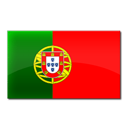

Favorites
| Favorite Teams: | ||
|---|---|---|
| Uruguay |
Belgium
|
Portual |
| Favorite Players: | ||
|---|---|---|
Hazard

LW |
Lukaku
ST |
Messi

RW |
| Favorite Clubs (Prem, La Liga, Other): | ||
|---|---|---|
| Chelsea | Tottenham | Barcelona |